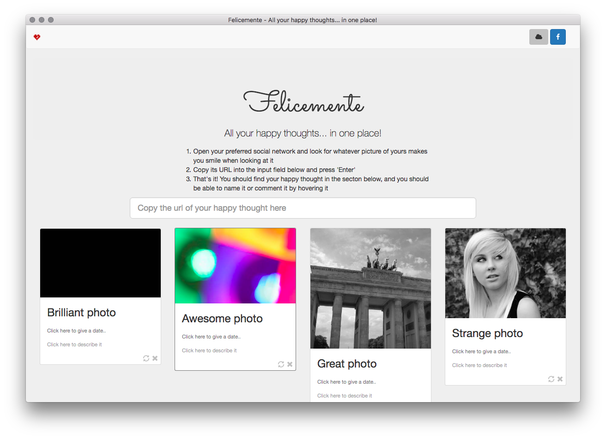

Italian for happily, Felicemente helps you keep track of all the happy thoughts you published to the social networks over the years. In a nutshell, it's like Pinterest, but for your fond memories.
Open the app, paste the link of that funny selfie you posted on Facebook few months ago, and press enter; Felicemente will take of the rest!
last updated: 8 Jan 2017
Windows: 2.0.1
Mac OS: 2.0.1